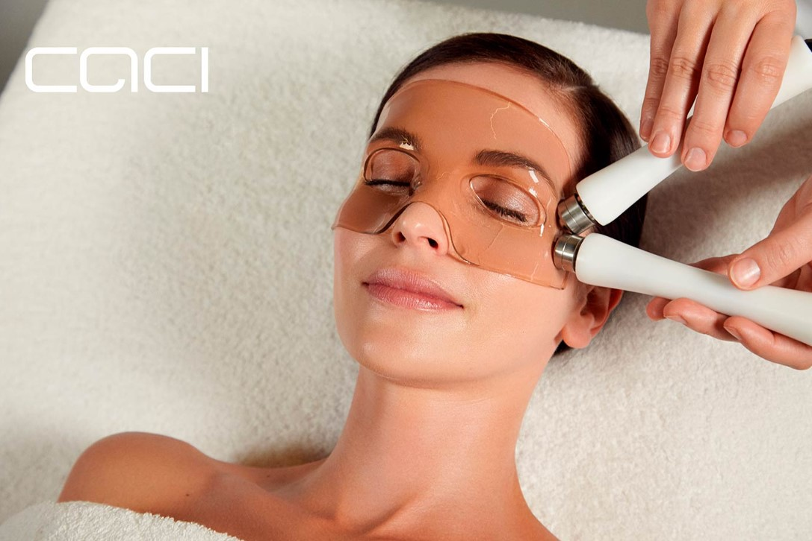
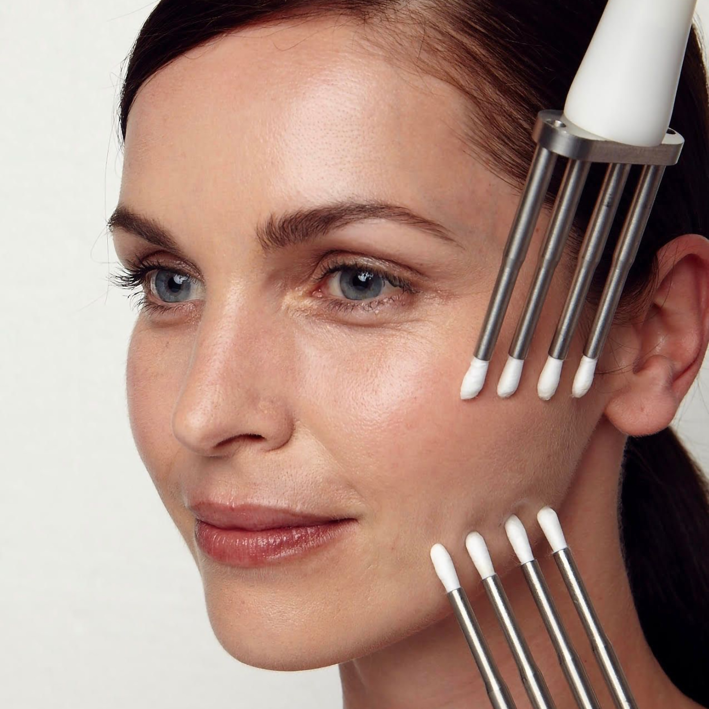

CACI Non-Surgical Facelift
- Lifts and tones facial muscles for a firmer, more youthful appearance.
- Reduces fine lines and wrinkles using microcurrent stimulation.
- Improves skin elasticity by boosting collagen and circulation.
How It Works: This advanced, non-invasive facial uses microcurrent impulses to lift and tone facial and neck muscles, improving skin elasticity and reducing the appearance of fine lines and wrinkles.
Duration: 60 minutes
CACI Eye Revive
- Targets puffiness, dark circles, and fine lines around the eyes.
- Uses a combination of microcurrent and LED light therapy for a brighter, refreshed look.
How It Works: Utilizes microcurrent to lift and tone the eye area, combined with serum-filled Hydro Eye Masks to soothe and hydrate, reducing puffiness and dark circles.
Duration: 30 minutes

CACI Hydratone Facial
- Deeply hydrates and plumps the skin using a hyaluronic acid-infused gel mask.
- Microcurrent rollers enhance product absorption, leaving skin radiant and nourished.
- Ideal for dry, dehydrated, or dull skin.
How It Works: Combines electrically conductive hyaluronic gel masks with microcurrent rollers to deliver intense hydration and improve skin firmness.
Duration: 30 minutes

CACI Jowl Lift
- Specifically targets sagging skin around the jawline to lift and redefine contours.
- Strengthens and tones the lower face muscles using microcurrent technology.
How It Works: Uses microcurrent to target muscle laxity around the jawline, lifting and firming for a more defined facial contour.
Duration: 30 minutes

CACI Hand Rejuvenation
- Targets signs of aging on the hands with hydrating and firming microcurrent therapy.
- Improves skin texture, reduces pigmentation, and boosts hydration.
How It Works: Uses a combination of microcurrent therapy and LED light to hydrate and firm the skin, improving texture and reducing age spots.
Duration: 30 minutes